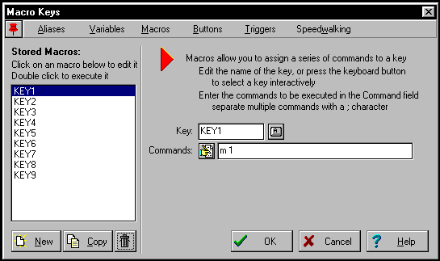

Moving your bot around furcadia is not an easy thing to do!
All your bot sees is code (If you are already done starting your bot you
should see this its the green text)
You will have to follow your bot with your real furry
hears how to make your bot walk
Move commands:
| goalleg |
Allegria Island |
| gostart |
Vinca |
| get |
Picks something up |
| use |
uses an object |
| who |
Who is on the map |
| lie |
Lie down |
| < |
turns |
| > |
turns the other way |
| m 1 |
moves south west |
| m 3 |
moves south east |
| m 7 |
moves north west |
| m 9 |
moves north east |
| wh name text |
Whispers to someone |
| "text |
Talks |
|
Setting up these as keys:
If you set up the movements as keys it will be a
lot easer to move your bots around
First press the button |

This is the marco keys
window!
On the left is the keys you have
on the left is the keys properties
|
This is usually how I have my keys setup but you can set them up anyway you
want to
KEY1 |
m 1 |
| KEY3 |
m 3 |
| KEY4 |
< |
| KEY5 |
gostart |
| KEY6 |
> |
| KEY7 |
m 7 |
| KEY9 |
m 9 |
|
When you have the keys setup how you like them click ok and SAVE YOUR BOT |
| *TIP* If you press the
button you can hit any key on
the keyboard and it will ad the key for you |
|